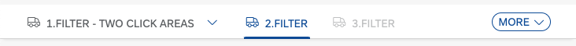

What's New in OpenUI5
1.93
What's New in OpenUI5
1.93
With
this release OpenUI5 is upgraded
from version 1.92 to 1.93.
New Features
|
New Theme Available for SAP Fiori
User Experience (Experimental)
We have introduced a new theme with 1.93.3, the preview version of the
Horizon visual theme for SAP Fiori
(theme ID: sap_horizon), as an addition to the
existing themes. To preview the new theme, see https://ui5.sap.com/?sap-ui-theme=sap_horizon#/controls.
The theme has the status 'experimental' and thus is subject
to change. It must not be used as a basis for custom themes
as long as the status is 'experimental'.
|
Improved
Features
|
OpenUI5 Data Types
The new version of OpenUI5 introduces a new skipDecimalsValidation
constraint for the sap.ui.model.odata.type.Unit
and sap.ui.model.odata.type.Currency data
types. It allows you to switch off validation on the number of
decimals.
|
|
OpenUI5 OData V2 Model
The new version of the OpenUI5 OData V2 model introduces the following features:
-
An OData V2-specific context,
sap.ui.model.odata.v2.Context.
Methods of the OData V2 model now return this context
instead of the basis context,
sap.ui.model.Context.
-
The new
sap.ui.model.ListBinding#getCount
method, which returns the count of entries in a
list.
|
|
OpenUI5 OData V4 Model
The new version of the OpenUI5 OData V4 model introduces the following features:
-
A search property in the
$$aggregation binding parameter
that allows you to specify a search that is executed
before the aggregation. Note that this requires the
service to support the search
transformation in $apply. For more
information, see Search Before Data Aggregation.
-
A retryAfter property in the technical
details of a message originating from a response with a
Retry-After header. For more
information, see Accessing the HTTP Status Code.
|
Improved
Controls
|
sap.f.DynamicPage
With the new headerPinned property and
headerContentPinnedStateChange event, you
can now control the pinned state of the
DynamicPageHeader programmatically. For more information, see the API
Reference.
|
|
sap.m.IconTabBar
We have updated the design of the overflow tab according
to the latest SAP Fiori guidelines. Additionally, when using the
StartAndEnd tab overflow mode, both
overflow tabs will display the number of tabs that they
hold.  For more information, see the Sample. -
When the control is used in Inline
header mode, icons can be added in front of the
tab-filter titles. This allows, for example, the
sap.m.IconTabBar control to be used
as a horizontal navigation in the
sap.tnt.ToolHeader. For more information, see the Sample.
|
|
sap.m.List, sap.m.Table,
sap.m.Tree
We have provided a new toggle option in multi-selection mode for
these controls: If the new multiSelectMode
property
has
the Default value, the table
renders the Select All
checkbox
in the column header as before. If the value of the property is
ClearAll, the Select
All checkbox and the related feature are no
longer available. The list or table
then
provides an option to
deselect
all selected items at once. For more information, see the API Reference and
the Sample.
|
sap.m.MultiComboBoxWe
have the range selection functionality in
sap.m.MultiComboBox. Two new parameters
have been introduced to the selectionChange
event: changedItems and
selectAll. Users can now select a group of
items by holding the Shift key and selecting the
checkboxes of the first and the last items from the desired
group. For more information, see the Sample. |
|
sap.m.PlanningCalendar
-
Application developers can now define relative timeframes
that are different from the absolute values in the
calendar. A relative view displays periods that are
relative to a given custom start date. Common use-case
scenarios include Week X, Day X (since the start of a
project), etc. This feature is in experimental state.
For more information, see the API
Reference and the Sample.
-
We have introduced (in experimental state) a way to place
custom content inside the
CalendarAppointment control for
non-SAP Fiori (custom) applications with a freestyle nature. When
the customContent aggregation is used,
the title, text,
description, and
icon properties of the appointment
are ignored. The application developer must ensure that
all of the accessibility requirements are met, and that
the height of the content conforms with the height
provided by the appointment. We do not recommend using
interactive controls as content, as they may trigger
unwanted selection of the appointment with unpredictable
results. For more information, see the API
Reference.
|
|
sap.m.SelectDialog,
sap.m.TableSelectDialog
The updateStarted,
updateFinished, and
selectionChange events from an inner list
or a table are now exposed to the
sap.m.SelectDialog and
sap.m.TableSelectDialog controls.
Application developers can use these events to achieve lazy
loading with JSON model. For more information, see the Sample.
|
|
sap.tnt.ToolPage
We have added a new subHeader aggregation to the
control. You can use it to create a horizontal navigation bar in
the tool page layout. For more information, see the Sample.
|
|
sap.ui.integration.widgets.Card
-
We have introduced a Configuration Editor tool that supports the card integration
process on the customer side. Roles that can use the
Configuration Editor include local administrators,
page/content administrators, and translators. For more information, see the Configuration
Editor section and a Card Sample
in the Card Explorer.
-
We have added (in experimental state) a new feature, and
now Integration cards can have a footer with actionable
buttons. Additionally, the List type card is enhanced
and now list items support the same actionable buttons,
including the option to remove the item. This behavior
is achieved using the new actionsStrip
(experimental) property that describes all buttons and
their behavior. For more information, see the Footer,
and List Card
sections, and the Footer and
List Card Quick
Actions samples in the Card
Explorer.
|
|
sap.uxap.ObjectPageLayout
With the new headerContentPinned property and
pinnedStateChange event, you can now
control the pinned state of the
DynamicPageHeader programmatically. For more information, see the API
Reference.
|
Deprecations
|
There are currently no major
deprecations. For a complete list of all deprecations, see Deprecated
APIs.
|
Demo Kit
Improvements
Change Version Dialog We have improved the
Change Version dialog to help you
find the desired version faster. We grouped the patch numbers
according to minor version, and we added a search
field.  |